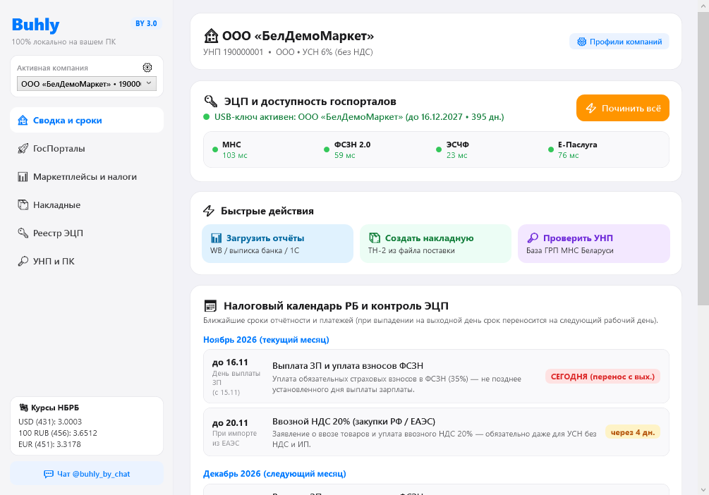

Релиз v3.0 • Мультипрофиль • WB + Ozon • Все банки РБ • ТН-2/БСО • ГосПорталы
Локальный помощник селлера и малого бизнеса РБ: WB/Ozon, налоги, ТН-2/БСО, выписка банка и госпорталы в 1 клик
Учёт для ООО на УСН 6%, ИП на подоходном 20%/30% + ФСЗН 35% и ОСН. Сверка маркетплейсов с выпиской любого банка РБ, печать на бланки БСО, налоговый календарь и вход в МНС, ФСЗН 2.0 и ЭСЧФ без ERR_SSL_PROTOCOL_ERROR.
Внутри чистого архива: Buhly.exe (~602 КБ, без установки и без .cmd-скриптов), README.md и LICENSE (MIT). Прямая ссылка на .exe • SHA256SUMS.txt
Code Signing Policy: Free code signing provided by SignPath.io, using a certificate by SignPath Foundation.
Portable (1 файл, без установки)
0% телеметрии • TLS 1.2
Windows 10 / 11 (.NET 4.8)
MIT Open Source
Новый десктопный интерфейс Buhly v3.0
Мультипрофиль компаний слева, курсы НБРБ и рабочие модули — всё на одном экране

Сводка: активная компания, статус USB-токена ЭЦП, пинг 4 госпорталов и налоговый календарь РБ с учётом переноса выходных и ввозного НДС 20%.